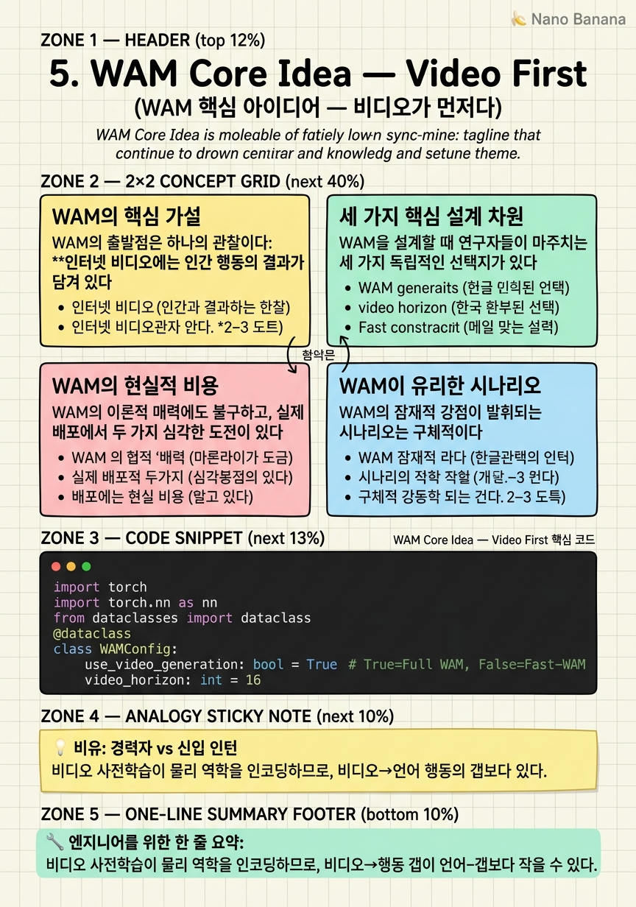

WAM Core Idea — Video First

🎯 학습 목표
- WAM의 핵심 가설을 한 문장으로 설명할 수 있다
- 비디오-행동 갭이 언어-행동 갭보다 왜 작을 수 있는지 설명한다
- 세 가지 설계 차원을 나열할 수 있다
- WAM의 학습 비용과 추론 속도 문제를 수치로 알고 있다
- WAM이 VLA보다 잠재적으로 유리한 시나리오를 설명할 수 있다
"비디오 모델을 로봇 행동에 연결하면 어떨까?" 이 단순한 아이디어가 WAM의 출발점이다. VLA가 언어 모델에서 행동으로 직접 연결하는 데서 오는 그라운딩 갭을 해결하기 위해, WAM은 우회로를 택한다: 이미 물리 세계를 잘 이해하는 비디오 모델을 백본으로 쓰고, 언어-비디오-행동의 순서로 연결한다.
NVIDIA 아티클의 저자 Moritz Reuss는 이 접근법을 핵심 가설로 압축한다: "비디오 사전학습이 로봇 제어를 위한 더 나은 초기화를 제공한다면, 남은 비디오-행동 갭이 언어-행동 그라운딩을 직접 학습하는 것보다 작을 수 있다."
이 챕터에서는 WAM의 핵심 가설을 깊이 파고들고, 세 가지 핵심 설계 차원의 개요를 제시한다.
핵심 내용
WAM의 핵심 가설
WAM의 출발점은 하나의 관찰이다: 인터넷 비디오에는 인간 행동의 결과가 담겨 있다. 요리 영상에는 손이 어떻게 움직여야 오믈렛이 만들어지는지가, 공장 영상에는 어떤 움직임이 부품을 조립하는지가 시각적으로 기록되어 있다. 언어 데이터에는 이런 저수준 물리 정보가 없지만, 비디오에는 있다.
WAM 가설:
\[\text{Gap}_{\text{video} \to \text{action}} < \text{Gap}_{\text{language} \to \text{action}}\]
비디오 표현을 로봇 행동으로 변환하는 것이, 언어 표현을 로봇 행동으로 변환하는 것보다 더 작은 학습 부담을 요구한다는 것이다.
왜 그럴 수 있을까? 비디오 모델은 사전학습에서 이미 물체 간 상호작용의 인과 관계, 접촉 역학(밀기·당기기·집기의 시각적 패턴), 목표 지향적 행동 시퀀스의 구조를 인코딩했다. VLM이 이 모든 것을 로봇 데이터에서 새로 배워야 하는 반면, 비디오 모델은 이미 "물리 세계에 무슨 일이 일어나는지"를 알고 있다.
세 가지 핵심 설계 차원
WAM을 설계할 때 연구자들이 마주치는 세 가지 독립적인 선택지가 있다.
차원 1 — 무엇을 예측할 것인가(Paradigm):
- 역동역학(Inverse Dynamics): 미래 비디오를 먼저 생성하고, 그 비디오에서 행동을 역으로 추출
- 공동 예측(Joint Prediction): 비디오와 행동을 동시에 생성
- 표현 전용(Representation-Only): 비디오 모델을 특징 추출기로만 쓰고 생성은 스킵
차원 2 — 행동을 어떻게 모델에 넣을 것인가(Action Integration):
- 기본 행동 토큰: 행동을 별도 모달리티 토큰으로 처리
- 이미지로서의 행동: 행동을 합성 비디오 프레임으로 인코딩 (GENIMA, Cosmos Policy)
- 잠재 행동: 행동을 컴팩트한 추상 표현으로 압축 (Being-H0.7)
차원 3 — 아키텍처 구성(Architecture):
- 계층적(Hierarchical): 비디오 생성과 행동 추출을 별도 모듈로 분리
- 단일(Monolithic): 하나의 Transformer가 비디오와 행동을 함께 처리 (DreamZero)
- 전문가 혼합(MoT): 모달리티별 전문가 + 공유 어텐션
WAM의 현실적 비용
WAM의 이론적 매력에도 불구하고, 실제 배포에서 두 가지 심각한 도전이 있다.
학습 비용: WAM은 VLA 대비 훨씬 긴 토큰 시퀀스를 처리한다. 16프레임 비디오를 토큰화하면 VLA의 단일 이미지 대비 10~16배 더 많은 토큰이다.
| 모델 | 추정 학습 비용 |
|---|---|
| VLA Foundry 파이프라인 | ~6.9 ZFLOPs |
| DreamZero 행동 파인튜닝 | ~9 ZFLOPs |
| 전체 WAM 스택(비디오 사전학습 포함) | ~51+ ZFLOPs |
추론 속도: 추론 시 비디오를 실제로 생성하는 WAM은 590~800ms/청크다. Pi-0(VLA)은 ~190ms. 빠른 반복 조작이 필요한 작업에서는 이 지연이 치명적이다. Fast-WAM은 비디오 생성을 스킵해 속도를 3~4배 높이는 대신 세계 모형의 "상상" 능력을 포기한다.
WAM이 유리한 시나리오
WAM의 잠재적 강점이 발휘되는 시나리오는 구체적이다.
장기 지평 계획(Long-horizon planning): "설거지를 하고, 식탁을 닦고, 물건을 정리해줘" 같은 다단계 작업. 비디오 생성을 통한 미래 상상이 계획 수립에 도움이 된다.
처음 보는 물체 조작: 비디오 사전학습에서 익힌 물리 역학 지식이 새로운 물체에 대한 일반화를 도울 수 있다.
데이터 효율 (가설적): WAM 가설이 맞다면, 비디오 사전학습이 로봇 데이터를 줄여줘야 한다. 하지만 이것은 아직 실증적으로 충분히 검증되지 않았다.
반면 WAM이 불리한 시나리오: - 빠른 반응 속도가 필요한 동적 작업 - 학습 컴퓨팅 자원이 제한된 소규모 팀 - 단순 반복 조작처럼 비디오 상상이 불필요한 작업
💡 비유로 이해하기
새 일을 배우는 두 신입 직원이 있다. 한 명은 VLA 신입: 업무 매뉴얼(언어 데이터)을 완벽히 읽고 왔다. 무엇을 해야 하는지는 잘 알지만, 실제 도구를 처음 잡아본다. 손이 어떻게 움직여야 하는지는 현장에서 직접 배워야 한다.
다른 한 명은 WAM 경력 이직자: 다른 업종이었지만 10년간 다양한 현장에서 일하며 물건을 다루고, 기계를 조작하고, 공간에서 몸을 움직이는 법을 몸으로 익혔다. 비디오 사전학습이 이 경력이다. 이 사람은 새 기계 조작법을 배울 때 "이전에 비슷한 걸 해봤는데"라는 전이가 일어난다.
신입이 빨리 반응하고 매뉴얼에 충실하다면, 경력자는 처음 보는 상황에서 더 유연하게 대처할 수 있다. 어느 쪽이 더 나은가는 작업의 성격에 따라 다르다.
💻 코드 예시
WAM의 두 핵심 경로(비디오 생성 포함 vs 표현 전용)를 추상적으로 구현해보자. 실제 시스템에서의 구조적 차이를 명확히 보여준다.
import torch
import torch.nn as nn
from dataclasses import dataclass
@dataclass
class WAMConfig:
use_video_generation: bool = True # True=Full WAM, False=Fast-WAM
video_horizon: int = 16
action_chunk_size: int = 20
latent_dim: int = 512
class WorldActionModel(nn.Module):
def __init__(self, cfg, video_backbone, action_head):
super().__init__()
self.cfg = cfg
self.video_backbone = video_backbone # Wan/Cosmos 기반
self.action_head = action_head
self.fast_policy = nn.Linear(cfg.latent_dim, cfg.action_chunk_size * 7)
def forward(self, current_frames, language_goal):
if self.cfg.use_video_generation:
return self._full_wam(current_frames, language_goal)
return self._fast_wam(current_frames, language_goal)
def _full_wam(self, frames, lang):
"""Full WAM: 미래 비디오 생성 → 행동 추출. ~600ms"""
future_video = self.video_backbone.generate(
condition_frames=frames, text=lang,
num_future_frames=self.cfg.video_horizon
)
all_frames = torch.cat([frames, future_video], dim=1)
return self.action_head(all_frames, lang)
def _fast_wam(self, frames, lang):
"""Fast WAM: 비디오 생성 스킵 → 인코딩만. ~200ms"""
emb = self.video_backbone.encode(frames) # 생성 없이 인코딩만
return self.fast_policy(emb).view(-1, self.cfg.action_chunk_size, 7)use_video_generation=True일 때 _full_wam()이 호출되어 비디오를 상상하고 행동을 추출한다. False면 _fast_wam()이 인코딩만 하고 바로 행동으로 매핑한다. DreamZero와 Fast-WAM도 동일한 구조적 선택을 한다.
🏭 현업에서의 평가
✅ 시니어가 보는 것
- WAM 가설이 아직 실증적으로 완전히 검증되지 않았음을 알고 있는가
- 전체 WAM 스택의 학습 비용(51+ ZFLOPs)을 인식하는가
- 어떤 작업/환경에서 WAM을 선택할지 구체적으로 설명할 수 있는가
⚠️ 레드 플래그
- WAM이 VLA보다 '무조건' 낫다고 단정하는 것 — RoboArena 점수 차이는 작고 논쟁 중
- 데이터 효율 가설을 실증된 사실처럼 말하는 것
- Fast-WAM이 비디오 생성을 스킵한다는 것을 모르는 것
🎤 예상 인터뷰 질문
- WAM의 비디오-행동 갭이 더 작다는 가설을 어떻게 실험적으로 검증할 수 있을까요?
- 물류 창고 로봇에 WAM과 VLA 중 어느 것을 선택하겠습니까?
- Full WAM의 590ms 추론 지연을 50ms 이하로 줄이려면 어떤 방법이 있을까요?
✨ 핵심 요약
WAM의 핵심 가설
비디오 사전학습이 물리 역학을 인코딩하므로, 비디오→행동 갭이 언어→행동 갭보다 작을 수 있다.
세 가지 설계 차원
무엇을 예측 / 행동을 어떻게 넣을지 / 아키텍처 구성 — 이 세 축이 WAM 설계를 정의한다.
학습 비용 현실
전체 WAM 스택: ~51+ ZFLOPs vs VLA Foundry: ~6.9 ZFLOPs.
추론 속도 문제
비디오 생성 포함 WAM: 590~800ms. Pi-0(VLA): ~190ms.
아직 열린 경쟁
RoboArena: DreamZero(WAM) 1750 vs Pi-0.5(VLA) 1622.